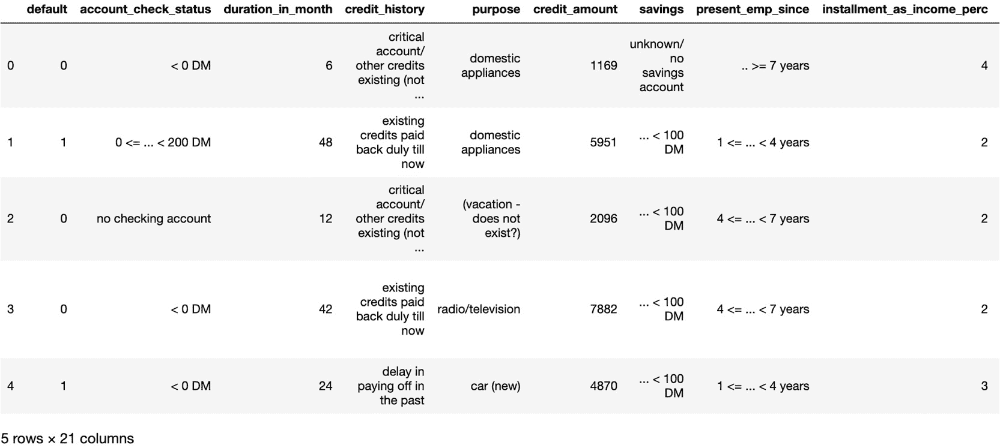
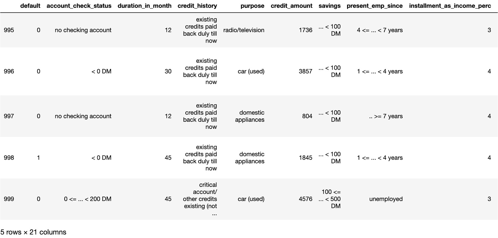
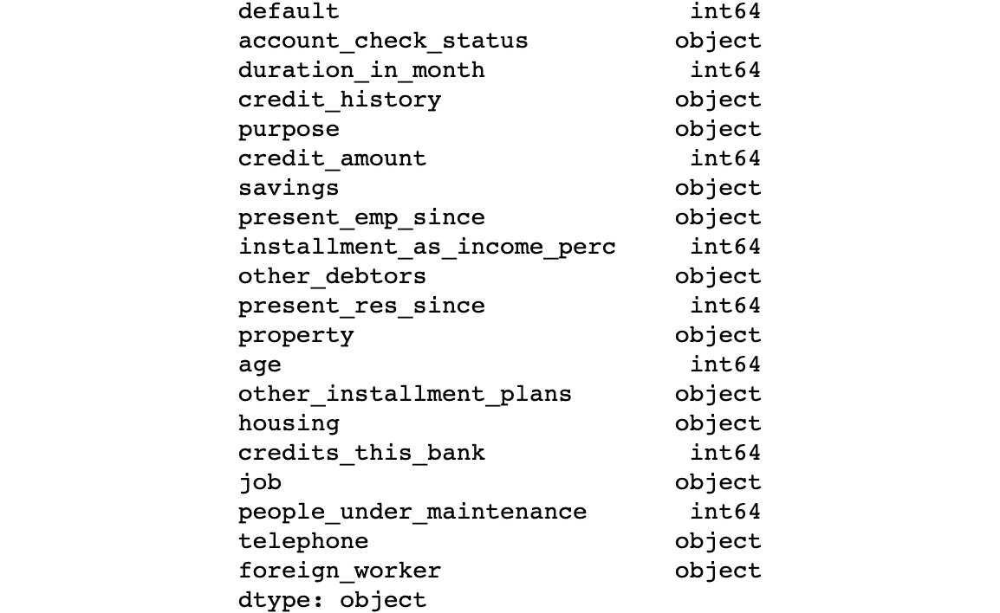
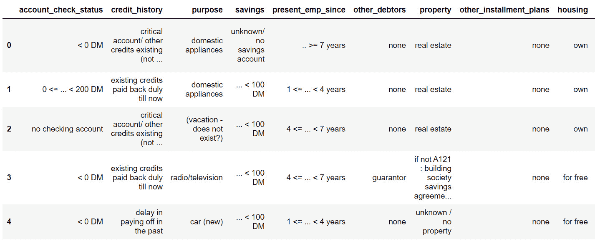
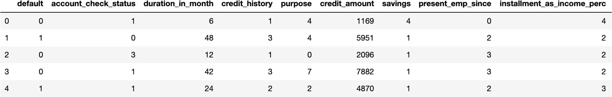
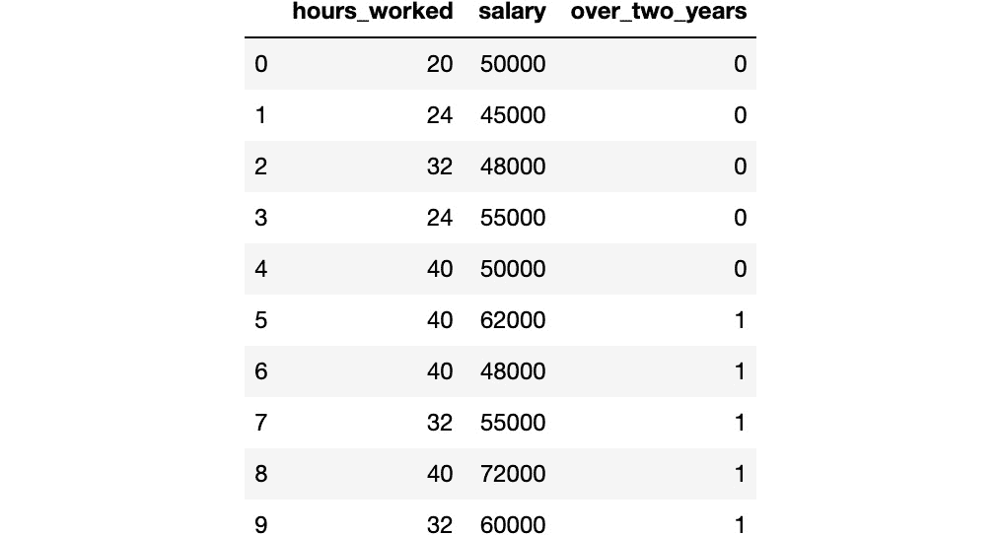
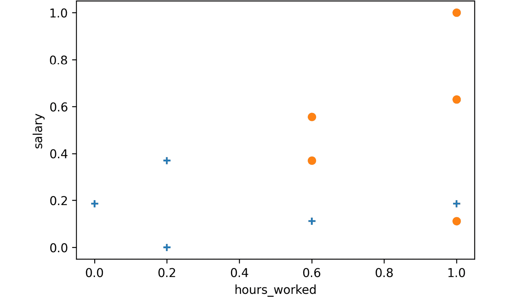

概观
本章向您介绍分类。您将实现各种技术，例如 k-最近邻和支持向量机。您将使用欧氏距离和曼哈顿距离来处理 k 近邻。您将应用这些概念来解决有趣的问题，例如预测信用卡申请人是否有违约风险，以及确定员工是否会在一家公司工作两年以上。到本章结束时，你将有足够的信心使用分类处理任何数据，并得出一定的结论。
简介
在上一章中，我们向您介绍了回归模型，并学习了如何用单变量或多变量以及高次多项式拟合线性回归模型。
与回归模型不同，回归模型侧重于学习如何预测连续数值(可以有无限个值)，分类(本章将介绍)是将数据分成单独的组，也称为类。
例如，可以训练一个模型来分析电子邮件，并预测它们是否是垃圾邮件。在这种情况下，数据被分为两个可能的组(或类)。这种分类也被称为二元分类，我们将在本章中看到几个这样的例子。然而，如果有两个以上的组(或类)，你将会处理一个多类分类(你会在第 4 章、决策树介绍中遇到一些这样的例子)。
但是什么是真实世界的分类问题呢？考虑一个试图预测给定用户对电影的评级的模型，其中该评分只能取值:喜欢、中立或不喜欢。这是一个分类问题。
在本章中，我们将学习如何使用 k-最近邻分类器和 SVM 算法对数据进行分类。正如我们在前一章中对回归所做的那样，我们将基于清理和准备好的训练数据构建一个分类器，并使用测试数据测试我们的分类器的性能。
我们将从看分类的基础开始。
分类的基础
如前所述，任何分类问题的目标都是使用训练集将数据准确地分成相关的组。这种项目在不同的行业有很多应用，例如教育，模型可以预测学生是否会通过考试，或者医疗保健，模型可以评估每个病人特定疾病的严重程度。
分类器是确定其所属的任何数据点的标签(输出)或值(类)的模型。例如，假设您有一组包含信用良好的个人的观察值，还有一组包含信用偿还倾向有风险的个人的观察值。
让我们称第一组为 P，第二组为 q。以下是此类数据的示例:
图 3.1:样本数据集
使用这些数据，您将训练一个分类模型，该模型将能够正确地将新的观察结果分类到这两组中的一组(这是二元分类)。该模型可以发现一些模式，如工资高于 6 万美元的人风险较小，或者抵押贷款/收入比高于 10 的人不偿还债务的风险更大。这将是一次多级分类演习。
分类模型可以分为不同的算法家族。最著名的如下:
- 基于距离的，比如 k 近邻
- 线性模型，如逻辑回归或支持向量机
- 基于树，如随机森林
在本章中，将向您介绍来自前两种类型家族的两种算法:k-最近邻(基于距离)和支持向量机(线性模型)。
注意
我们将在第四章、决策树介绍中带您浏览基于树的算法，如随机森林。
但是在进入模型之前，我们需要清理和准备我们将在本章中使用的数据集。
在下一节中，我们将使用德国信用审批数据集，并执行建模阶段所需的所有数据准备。让我们从加载数据开始。
练习 3.01:预测信用卡违约风险(加载数据集)
在本练习中，我们将把一个数据集加载到一个 pandas 数据帧中，并探索其内容。我们将使用德国信用批准的数据集来确定个人是否存在违约风险。
注意
这个数据集的 CSV 版本可以在我们的 GitHub 资源库中找到:
原始数据集和关于数据集的信息可以在https://archive . ics . UCI . edu/ml/datasets/Statlog+% 28 german+Credit+Data % 29找到。
数据文件位于https://archive . ics . UCI . edu/ml/machine-learning-databases/statlog/german/。
引文- 杜瓦，d .，&格拉夫，C..(2017).UCI 机器学习知识库。
- 打开新的 Jupyter 笔记本文件。
- 将
pandas包导入为pd:import pandas as pd
- 创建一个名为
file_url的新变量，它将包含原始数据集文件的 URL，如下面的代码片段所示:file_url = 'https://raw.githubusercontent.com/'\ 'PacktWorkshops/'\ 'The-Applied-Artificial-Intelligence-Workshop/'\ 'master/Datasets/german_credit.csv'
- 使用
pd.read_csv()方法导入数据:df = pd.read_csv(file_url)
- Use
df.head()to print the first five rows of the DataFrame:df.head()
预期输出如下:
图 3.2:数据集的前五行
正如您所看到的，前面的屏幕截图中的输出向我们展示了数据集的特征，可以是数字的，也可以是分类的(文本)。
- Now, use
df.tail()to print the last five rows of the DataFrame:df.tail()
预期输出如下:
图 3.3:数据集的最后五行
数据帧的最后几行与我们之前看到的第一行非常相似，因此我们可以假设各行之间的结构是一致的。
- Now, use
df.dtypesto print the list of columns and their data types:df.dtypes
预期输出如下:

图 3.4:列及其数据类型的列表
注意
要访问该特定部分的源代码，请参考https://packt.live/3hQXJEs。
你也可以在https://packt.live/3fN0DrT在线运行这个例子。您必须执行整个笔记本才能获得想要的结果。
从前面的输出中，我们可以看到这个数据帧有一些数字特征(int64)和文本特征(object)。我们还可以看到，这些特征中的大多数要么是个人的个人信息，如年龄，要么是财务信息，如信用历史或信用额。
通过完成这个练习，我们已经成功地将数据加载到数据帧中，并初步了解了它包含的功能和信息。
在前面的主题中，我们将研究如何预处理这些数据。
数据预处理
在构建分类器之前，我们需要格式化我们的数据，以便我们能够以最适合分类的格式保留相关数据，并删除所有我们不感兴趣的数据。
以下几点是实现这一目标的最佳方法:
N/A(orNA) values in the dataset, we may be better off substituting these values with a numeric value we can handle. Recall from the previous chapter thatNAstands forNAvalues or replace them with an outlier value.df.fillna(-1000000, inplace=True)
fillna()方法将所有的NA值变为数值。这个数值应该远离数据帧中的任何合理值。负一百万被分类器识别为异常，假设只有正值，如前所述。
0) specifies that we drop rows, not columns. The second argument (inplace=True) specifies that we perform the drop operation without cloning the DataFrame, and will save the result in the same DataFrame. This DataFrame doesn't have any missing values, so thedropna()method didn't alter the DataFrame.df.drop(['telephone'], 1, inplace=True)
第二个参数(值
1)表示我们正在删除列，而不是行。第一个参数是我们想要删除的列的枚举(这里是['telephone'])。使用inplace参数，以便调用修改原始数据帧。MinMaxScalermethod of the scikit-learnpreprocessingutility, as shown in the following code snippet:from sklearn import preprocessing import numpy as np data = np.array([[19, 65], \ [4, 52], \ [2, 33]]) preprocessing.MinMaxScaler(feature_range=(0,1)).fit_transform(data)预期输出如下:
array([[1. , 1. ], [0.11764706, 0.59375 ], [0. , 0. ]])二进制化根据条件将数据转换为 1 和 0，如以下代码片段所示:
preprocessing.Binarizer(threshold=10).transform(data)
预期输出如下:
array([[1, 1], [0, 1], [0, 1]])
在前面的例子中，我们根据每个值是否大于10(由threshold=10参数定义)的条件，将原始数据([19, 65],[4, 52],[2, 33])转换成二进制形式。例如，第一个值19高于10，因此在结果中被替换为1。
标注编码对于为建模阶段准备要素(输入)非常重要。虽然您的一些要素是字符串标签，但 scikit-learn 算法希望将这些数据转换为数字。
这就是 scikit-learn 的preprocessing库发挥作用的地方。
注意
您可能已经注意到，在信用评分示例中，有两个数据文件。一个包含字符串形式的标签，而另一个包含整数形式的标签。我们加载了带有字符串标签的数据，这样您就有了一些如何使用标签编码器正确预处理数据的经验。
标签编码不是火箭科学。它创建了字符串标签和数值之间的映射，以便我们可以向 scikit-learn 提供数字，如下例所示:
from sklearn import preprocessing
labels = ['Monday', 'Tuesday', 'Wednesday', \
'Thursday', 'Friday']
label_encoder = preprocessing.LabelEncoder()
label_encoder.fit(labels)
让我们列举编码:
[x for x in enumerate(label_encoder.classes_)]
预期输出如下:
[(0, 'Friday'), (1, 'Monday'), (2, 'Thursday'), (3, 'Tuesday'), (4, 'Wednesday')]
前面的结果向我们展示了 scikit-learn 已经为一周中的每一天创建了到相应数字的映射；比如Friday会是0，Tuesday会是3。
注意
默认情况下，scikit-learn 通过按字母顺序对原始值进行排序来分配映射编号。这就是Friday映射到0的原因。
现在，我们可以使用这种映射(也称为编码器)来转换数据。
让我们用transform()方法在两个例子Wednesday和Friday上尝试一下:
label_encoder.transform(['Wednesday', 'Friday'])
预期输出如下:
array([4, 0], dtype=int64)
正如所料，我们得到了结果4和0，它们分别是Wednesday和Friday的映射值。
我们也可以使用这个编码器通过inverse_transform函数执行逆变换。让我们用值0和4来试试:
label_encoder.inverse_transform([0, 4])
预期输出如下:
array(['Friday', 'Wednesday'], dtype='<U9')
正如所料，我们得到了值Friday和Wednesday。现在，让我们在德国数据集上练习我们所学的内容。
练习 3.02:应用标签编码将分类变量转换为数值变量
在本练习中，我们将使用我们刚刚学习的预处理技术之一，标签编码，将所有分类变量转换为数字变量。在训练任何机器学习模型之前，这一步都是必要的。
注意
我们将使用与上一练习中相同的数据集:德国信贷审批数据集:https://packt.live/3eriWTr。
以下步骤将帮助您完成本练习:
- 打开新的 Jupyter 笔记本文件。
- 将
pandas包导入为pd:import pandas as pd
- 创建一个名为
file_url的新变量，它将包含原始数据集的 URL:file_url = 'https://raw.githubusercontent.com/'\ 'PacktWorkshops/'\ 'The-Applied-Artificial-Intelligence-Workshop/'\ 'master/Datasets/german_credit.csv'
- 使用
pd.read_csv()方法加载数据:df = pd.read_csv(file_url)
- 从
scikit-learn导入preprocessing:from sklearn import preprocessing
- 定义一个名为
fit_encoder()的函数，该函数将数据帧和列名作为参数，并将在列的值上安装一个标签编码器。您将使用来自preprocessing的.LabelEncoder()和.fit()以及来自pandas的.unique()(这将提取 DataFrame 列的所有可能值):def fit_encoder(dataframe, column): encoder = preprocessing.LabelEncoder() encoder.fit(dataframe[column].unique()) return encoder
- 定义一个名为
encode()的函数，它将数据帧、列名和标签编码器作为参数，并将使用标签编码器转换列的值。您将使用.transform()方法来做到这一点:def encode(dataframe, column, encoder): return encoder.transform(dataframe[column])
- Create a new DataFrame called
cat_dfthat contains only non-numeric columns and print its first five rows. You will use the.select_dtypes()method from pandas and specifyexclude='number':cat_df = df.select_dtypes(exclude='number') cat_df.head()
预期输出(未显示所有列)如下:
图 3.5:仅包含非数字列的数据帧的前五行
- Create a list called
cat_colsthat contains the column name ofcat_dfand print its content. You will use.columnsfrom pandas to do this:cat_cols = cat_df.columns cat_cols
预期输出如下:
Index(['account_check_status', 'credit_history', 'purpose', 'savings', 'present_emp_since', 'other_debtors', 'property', 'other_installment_plans', 'housing', 'job', 'telephone', 'foreign_worker'], dtype='object') - 创建一个
for循环，它将遍历来自cat_cols的每一列，使用fit_encoder()安装一个标签编码器，并使用encode()函数:for col in cat_cols: label_encoder = fit_encoder(df, col) df[col] = encode(df, col, label_encoder)
转换该列 - Print the first five rows of
df:df.head()
预期输出如下:

图 3.6:编码数据帧的前五行
注意
要访问该特定部分的源代码，请参考https://packt.live/2Njh57h。
你也可以在https://packt.live/2YZhtx5在线运行这个例子。您必须执行整个笔记本才能获得想要的结果。
我们已经成功地编码了非数字列。现在，我们的数据帧只包含数值。
识别特征和标签
在训练我们的模型之前，我们还必须执行最后两个步骤。第一个是将我们的特征从标签中分离出来(也称为响应变量或因变量)。label列是我们希望模型预测的列。对于德国信用数据集，在我们的例子中，它将是名为default的列，它告诉我们个人是否会存在违约风险。
要素是数据集中存在的所有其他列。该模型将使用这些列中包含的信息，并找到相关的模式，以便准确地预测相应的标签。
scikit-learn 包要求将标签和特征存储在两个不同的变量中。幸运的是，pandas 包提供了从名为.pop()的数据帧中提取列的方法。
我们将提取default列，并将其存储在一个名为label的变量中:
label = df.pop('default')
label
预期输出如下:
0 0
1 1
2 0
3 0
4 1
..
995 0
996 0
997 0
998 1
999 0
Name: default, Length: 1000, dtype: int64
现在，如果我们查看df的内容，我们会看到default列已经不存在了:
df.columns
预期输出如下:
Index(['account_check_status', 'duration_in_month',
'credit_history', 'purpose', 'credit_amount',
'savings', 'present_emp_since',
'installment_as_income_perc', 'other_debtors',
'present_res_since', 'property', 'age',
'other_installment_plans', 'housing',
'credits_this_bank', 'job', 'people_under_maintenance',
'telephone', 'foreign_worker'],
dtype='object')
现在我们已经准备好了我们的特征和标签，我们需要将数据集分成训练集和测试集。
使用 Scikit-Learn 将数据分为训练和测试
训练分类器之前需要的最后一步是将我们的数据分成训练集和测试集。我们已经在第 2 章、回归介绍中看到了如何做到这一点:
from sklearn import model_selection
features_train, features_test, \
label_train, label_test = \
model_selection.train_test_split(df, label, test_size=0.1, \
random_state=8)
train_test_split方法将我们的特征和标签打乱，然后分成一个训练数据集和一个测试数据集。
我们可以将测试数据集的大小指定为一个介于0和1之间的数字。0.1的test_size意味着数据的10%将进入测试数据集。您还可以指定一个random_state,这样，如果您再次运行这个代码，就会得到完全相同的分割。
我们将使用训练集来训练我们的分类器，并使用测试集来评估其预测性能。通过这样做，我们可以评估我们的模型是否过度拟合，并且已经学习了只与训练集相关的模式。
在下一节中，我们将向您介绍著名的 k 近邻分类器。
K-最近邻分类器
现在我们已经有了训练和测试数据，是时候准备我们的分类器来执行 k-最近邻分类了。在介绍了 k 近邻算法之后，我们将使用 scikit-learn 来执行分类。
介绍 K-最近邻算法(KNN)
分类算法的目标是划分数据，以便我们可以确定哪些数据点属于哪个组。
假设给我们一组分类点。我们的任务是确定一个新的数据点属于哪一类。
为了训练一个 k 近邻分类器(也称为 KNN)，我们需要为训练集上的每个观察值提供对应的类，即它属于哪个组。该算法的目标是找到将导致该类别的特征之间的相关关系或模式。k-最近邻算法基于计算数据点之间距离的邻近测量。
两个最著名的邻近(或距离)度量是欧几里德距离和曼哈顿距离。我们将在下一节讨论更多的细节。
对于任何一个新的给定点，KNN 将找到它的 k 个最近的邻居，看看在这 k 个邻居中哪个类是最频繁的，并将其分配给这个新的观察值。但是你可能会问，k 是什么？确定 k 的值完全是任意的。您必须预先设置这个值。这不是算法可以学习的参数；需要由数据科学家来设定。这种参数称为超参数。理论上，可以将 k 的值设置在 1 到正无穷大之间。
有两个主要的最佳实践需要考虑:
- k 应该总是一个奇数。这背后的原因是我们希望避免以平局告终的情况。例如，如果你设置 k=4，碰巧一个点的两个邻居来自 A 类，另外两个来自 B 类，那么 KNN 不知道选择哪个类。为了避免这种情况，最好选择 k=3 或者 k=5 。
- k 越大，KNN 就越精确。例如，如果我们比较 k=1 和 k=15 的情况，第二种情况会让您更有信心 KNN 会选择正确的类，因为它需要在做出决定之前查看更多的邻居。另一方面，在 k=1 的情况下，它只查看最近的邻居，并将相同的类分配给一个观察。但是我们怎么能确定它不是一个异常值或特例呢？多问问邻居会降低做出错误决定的风险。但这有一个缺点:k 值越高，KNN 做出预测的时间就越长。这是因为它将不得不执行更多的计算来获得一个观测的所有邻居之间的距离。由于这一点，你必须找到一个甜蜜点，这将给出正确的预测，而不牺牲太多的时间来作出预测。
在 Scikit-Learn 中使用 K-最近邻分类器的距离度量
许多距离度量可以与 k-最近邻算法一起工作。我们将介绍两种最常用的距离:两个数据点的欧几里德距离和曼哈顿距离。
欧几里德距离
坐标分别为A=(a1, a2, …, an)和B=(b1, b2, …, bn)的两点A和B之间的距离，就是连接这两点的直线的长度。例如，如果 A 和 B 是二维数据点，欧几里德距离d将如下:
图 3.7:A 和 B 之间欧几里得距离的可视化表示
计算欧几里德距离的公式如下:
图 3.8:A 点和 B 点之间的距离
由于我们将在本书中使用欧几里德距离，让我们看看如何使用 scikit-learn 来计算多个点的距离。
我们必须从sklearn.metrics.pairwise导入euclidean_distances。该函数接受两组点，并返回一个矩阵，该矩阵包含每个点到第一组和第二组点的成对距离。
让我们以一个观察值 Z 为例，用坐标(4, 4)。在这里，我们想分别用坐标(2, 3)、(3, 7)和(1, 6)计算与其他三个点 A、B 和 C 的欧几里德距离:
from sklearn.metrics.pairwise import euclidean_distances observation = [4,4] neighbors = [[2,3], [3,7], [1,6]] euclidean_distances([observation], neighbors)
预期输出如下:
array([[2.23606798, 3.16227766, 3.60555128]])
这里 Z=( 4,4)和 B=( 3,7)的距离近似为3.162，这是我们在输出中得到的。
我们还可以计算同一集合中各点之间的欧几里德距离:
euclidean_distances(neighbors)
预期输出如下:
array([[0. , 4.12310563, 3.16227766],
[4.12310563, 0. , 2.23606798],
[3.16227766, 2.23606798, 0. ]])
包含值0的对角线对应于每个数据点与其自身之间的欧几里德距离。这个矩阵相对于这条对角线是对称的，因为它计算两点的距离及其倒数。例如，第一行上的值4.12310563是 A 和 B 之间的距离，而第二行上的相同值对应于 B 和 A 之间的距离。
曼哈顿/海明距离
曼哈顿(或汉明)距离的公式与欧几里德距离非常相似，但它不是使用平方根，而是依赖于计算数据点坐标差的绝对值:

图 3.9:曼哈顿和海明距离
你可以把曼哈顿的距离想象成我们在用网格而不是直线来计算距离:
图 3.10:A 和 B 之间曼哈顿距离的可视化表示
如上图所示，曼哈顿距离将沿着格网定义的路径从 a 到 B 点。
另一个有趣的特性是，在 A 和 B 之间可以有多条最短路径，但是它们的曼哈顿距离都相等。在前面的示例中，如果格网的每个像元都等于单位 1，则高亮显示的所有三条最短路径的曼哈顿距离都将为 9。
欧几里德距离是距离的更精确的概括，而曼哈顿距离稍微容易计算，因为您只需要找到绝对值之间的差，而不是计算平方之间的差，然后求根。
练习 3.03:演示 Matplotlib 中的 K-最近邻分类器算法
假设我们有一个雇员数据列表。我们的特色是每周工作小时数和年薪。我们的标签表明员工是否在我们公司工作了 2 年以上。停留时间不足 2 年用 0 表示，大于等于 2 年用 1 表示。
我们想创建一个三近邻分类器，用于确定一名员工是否会在我们公司工作至少 2 年。
然后，我们将使用这个分类器来预测一个要求每周工作 32 小时、年收入 52，000 美元的员工是否会在该公司工作 2 年。
按照以下步骤完成本练习:
注意
上述数据集可在位于 https://packt.live/2V5VaV9的 GitHub获得。
- 打开新的 Jupyter 笔记本文件。
- 将
pandas包导入为pd:import pandas as pd
- 创建一个名为
file_url()的新变量，它将包含原始数据集的 URL:file_url = 'https://raw.githubusercontent.com/'\ 'PacktWorkshops/'\ 'The-Applied-Artificial-Intelligence-Workshop/'\ 'master/Datasets/employees_churned.csv'
- 使用
pd.read_csv()方法加载数据:df = pd.read_csv(file_url)
- Print the rows of the DataFrame:
df
预期输出如下:
图 3.11:雇员数据集的数据框架
- 从
scikit-learn导入preprocessing:from sklearn import preprocessing
- 用
feature_range=(0,1)实例化一个MinMaxScaler并保存到一个名为scaler:scaler = preprocessing.MinMaxScaler(feature_range=(0,1))
的变量中 - Scale the DataFrame using
.fit_transform(), save the results in a new variable calledscaled_employees, and print its content:scaled_employees = scaler.fit_transform(df) scaled_employees
预期输出如下:
array([[0. , 0.18518519, 0. ], [0.2 , 0. , 0. ], [0.6 , 0.11111111, 0. ], [0.2 , 0.37037037, 0. ], [1. , 0.18518519, 0. ], [1. , 0.62962963, 1. ], [1. , 0.11111111, 1. ], [0.6 , 0.37037037, 1. ], [1. , 1. , 1. ], [0.6 , 0.55555556, 1. ]])在前面的代码片段中，我们缩放了原始数据集，使所有值的范围都在 0 和 1 之间。
- 从缩放后的数据中，提取三列中的每一列，并将它们保存到名为
hours_worked、salary和over_two_years的三个变量中，如下面的代码片段所示:hours_worked = scaled_employees[:, 0] salary = scaled_employees[:, 1] over_two_years = scaled_employees[:, 2]
- 将
matplotlib.pyplot包作为plt:import matplotlib.pyplot as plt
导入 - Create two scatter plots with
plt.scatterusinghours_workedas the x-axis andsalaryas the y-axis, and then create different markers according to the value ofover_two_years. You can add the labels for the x and y axes withplt.xlabelandplt.ylabel. Display the scatter plots withplt.show():plt.scatter(hours_worked[:5], salary[:5], marker='+') plt.scatter(hours_worked[5:], salary[5:], marker='o') plt.xlabel("hours_worked") plt.ylabel("salary") plt.show()预期输出如下:
+ points represent the employees that stayed less than 2 years, while the
oones are for the employees who stayed for more than 2 years.现在，假设我们获得了一个新的观察值，并且我们想要使用缩放数据集的数据来计算欧几里德距离。
- 用坐标
[0.5, 0.26]:observation = [0.5, 0.26]
创建一个名为observation的新变量 - 从
sklearn.metrics.pairwise:from sklearn.metrics.pairwise import euclidean_distances
导入euclidean_distances功能 - 创建一个名为
features的新变量，它将提取缩放数据集的前两列:features = scaled_employees[:,:2]
- Calculate the Euclidean distance between
observationandfeaturesusingeuclidean_distances, save it into a variable calleddist, and print its value, as shown in the following code snippet:dist = euclidean_distances([observation], features) dist
预期输出如下:
array([[0.50556627, 0.39698866, 0.17935412, 0.3196586 , 0.50556627, 0.62179262, 0.52169714, 0.14893495, 0.89308454, 0.31201456]])注意
要访问该特定部分的源代码，请参考https://packt.live/3djY1jO。
你也可以在 https://packt.live/3esx7HF 的在线运行这个例子。您必须执行整个笔记本才能获得想要的结果。
从前面的输出中，我们可以看到三个最近的邻居如下:
0.1564897为点[0.6, 0.37037037, 1.]0.17114358为点[0.6, 0.11111111, 0.]0.32150303为点[0.6, 0.55555556, 1.]
如果我们选择k=3，KNN 将查看这三个最近邻的类，由于其中两个的标签为1，它会将该类分配给我们的新观察值[0.5, 0.26]。这意味着我们的三近邻分类器会将这位新员工归类为更有可能呆上至少两年。
通过完成这个练习，我们看到了 KNN 分类器如何通过使用欧几里德距离找到一个新观察值的三个最近邻居来对其进行分类，然后将最频繁的类分配给它。
sci kit-learn 中 K-最近邻分类器的参数化
分类器的参数化是您微调分类器准确性的地方。由于我们尚未了解 k-最近邻的所有可能变化，因此我们将重点关注您将基于此主题理解的参数:
注意
可以在这里访问 k-nearest neighbors 分类器的文档:http://sci kit-learn . org/stable/modules/generated/sk learn . neighbors . kneighborsclassifier . html。
n_neighbors:这是 k 近邻算法的 k 值。默认值为5。metric:创建分类器时，您会看到一个名称——Minkowski。不要担心这个名字，你已经了解了一阶和二阶闵可夫斯基度规。该指标有一个power参数。对于p=1，闵可夫斯基度规与曼哈顿度规相同。对于p=2，闵可夫斯基度规与欧几里德度规相同。- 这就是闵可夫斯基度规的力量。默认值为
2。
创建分类器后，必须指定这些参数:
classifier = neighbors.KNeighborsClassifier(n_neighbors=50, p=2)
然后，您必须用您的训练数据来拟合 KNN 分类器:
classifier.fit(features, label)
predict()方法可用于预测任何新数据点的标签:
classifier.predict(new_data_point)
在下一个练习中，我们将使用 scikit-learn 中的 KNN 实现来自动查找最近邻并分配相应的类。
练习 3.04:sci kit-learn 中的 K-最近邻分类
在本练习中，我们将使用 scikit-learn 在德国信贷审批数据集上自动训练一个 KNN 分类器，并为n_neighbors和p超参数尝试不同的值，以获得最佳输出值。在拟合 KNN 之前，我们需要对数据进行缩放。
按照以下步骤完成本练习:
注意
本练习是练习 3.02 、的后续，应用标签编码将分类变量转换为数值。我们已经将来自练习 3.02 、的结果数据集保存在位于https://packt.live/2Yqdb2Q的 GitHub 存储库中，该练习应用标签编码将分类变量转换为数值。
- 打开新的 Jupyter 笔记本。
- 导入
pandas包为pd:import pandas as pd
- 创建一个名为
file_url的新变量，它将包含原始数据集的 URL:file_url = 'https://raw.githubusercontent.com/'\ 'PacktWorkshops/'\ 'The-Applied-Artificial-Intelligence-Workshop/'\ 'master/Datasets/german_prepared.csv'
- 使用
pd.read_csv()方法加载数据:df = pd.read_csv(file_url)
- 从
scikit-learn导入preprocessing:from sklearn import preprocessing
- 用
feature_range=(0,1)实例化MinMaxScaler并保存到一个名为scaler:scaler = preprocessing.MinMaxScaler(feature_range=(0,1))
的变量中 - 安装缩放器，使用
.fit_transform()将相应的变换应用于数据帧，并将结果保存到名为scaled_credit:scaled_credit = scaler.fit_transform(df)
的变量中 - 将
response变量(第一列)提取到名为label:label = scaled_credit[:, 0]
的新变量中 - 将特性(除第一列之外的所有列)提取到一个名为
features:features = scaled_credit[:, 1:]
的新变量中 - 从
sklearn导入model_selection.train_test_split:from sklearn.model_selection import train_test_split
- 使用
train_test_split:features_train, features_test, \ label_train, label_test = \ train_test_split(features, label, test_size=0.2, \ random_state=7)
用test_size=0.2和random_state=7将缩放数据集分割成训练集和测试集 - 从
sklearn导入neighbors:from sklearn import neighbors
- 实例化
KNeighborsClassifier并保存到一个名为classifier:classifier = neighbors.KNeighborsClassifier()
的变量中 - Fit the k-nearest neighbors classifier on the training set:
classifier.fit(features_train, label_train)
由于我们没有提到 k 的值，所以默认为
5。 - Print the accuracy score for the training set with
.score():acc_train = classifier.score(features_train, label_train) acc_train
您应该得到以下输出:
0.78625
这样，我们在使用默认超参数值: k=5 和欧几里德距离的训练集上获得了
0.78625的准确度分数。让我们来看看测试集的分数。
- Print the accuracy score for the testing set with
.score():acc_test = classifier.score(features_test, label_test) acc_test
您应该得到以下输出:
0.75
测试集上的准确度分数下降到了
0.75。这意味着我们的模型过度拟合，不能很好地概括看不见的数据。在下一个活动中，我们将尝试不同的超参数值，看看我们是否可以改进这一点。注意
要访问该特定部分的源代码，请参考https://packt.live/2ATeluO。
你也可以在 https://packt.live/2VbDTKx在线运行这个例子。您必须执行整个笔记本才能获得想要的结果。
在本练习中，我们学习了如何将数据集分为训练集和测试集，并拟合 KNN 算法。我们的最终模型可以在 75%的情况下准确预测个人是否更有可能违约。
活动 3.01:提高信用评分的准确性
在本活动中，您将实现 k-最近邻分类器的参数化并观察最终结果。信用评分的准确率目前是 75%。你需要想办法提高几个百分点。
您可以使用欧几里德距离和曼哈顿距离尝试不同的 k 值(5、10、15、25和50)。
注意
本活动要求您首先完成 scikit-learn 中的练习 3.04 、K-最近邻分类，因为我们将在此使用之前准备的数据。
以下步骤将帮助您完成此活动:
- 从
sklearn导入neighbors。 - 创建一个函数，用指定的超参数实例化
KNeighborsClassifier，用训练数据拟合它，并返回训练集和测试集的准确度分数。 - 使用您创建的函数，评估欧几里德距离和曼哈顿距离的 k = (
5、10、15、25、50)的准确度分数。 - 找出超参数的最佳组合。
预期输出如下:
(0.775, 0.785)
注意
这项活动的解决方案可以在第 343 页找到。
在下一节中，我们将向您介绍另一个机器学习分类器:一个支持向量机 ( SVM )。
用支持向量机分类
我们在第二章、回归介绍中首次使用支持向量机进行回归。在本主题中，您将了解如何使用支持向量机进行分类。和往常一样，我们将使用 scikit-learn 在实践中运行我们的示例。
什么是支持向量机分类器？
SVM 的目标是在 n 维空间中找到一个表面，将该空间中的数据点分成多个类。
在二维空间中，这个曲面通常是一条直线。然而，在三维空间中，SVM 经常发现一个平面。这些曲面在某种意义上是最佳的，因为它们基于机器可用的信息，因此它可以优化 n 维空间的分离。
由 SVM 找到的最佳分离子称为最佳分离超平面。
SVM 用于找到分隔两组数据点的一个表面。换句话说，支持向量机是二元分类器。这并不意味着支持向量机只能用于二元分类。虽然我们只讨论了一个平面，但是通过概括任务本身，支持向量机可以用于将空间划分为任意数量的类。
分离器表面在最大化每个数据点到分离器表面的距离的意义上是最佳的。
向量是定义在 n 维空间上的数学结构，具有大小(长度)和方向。在二维空间中，绘制从原点到点(x，y)的向量( x，y )。基于几何学，你可以利用勾股定理计算矢量的长度，通过计算横轴与矢量的夹角计算矢量的方向。
例如，在二维中，向量(3，-4)具有以下大小:
np.sqrt( 3 * 3 + 4 * 4 )
预期输出如下:
5.0
它有以下方向(以度为单位):
np.arctan(-4/3) / 2 / np.pi * 360
预期输出如下:
-53.13010235415597
了解支持向量机
假设给定两组具有 0 和 1 两个不同类的点。为了简单起见，我们可以想象一个二维平面，它有两个特征:一个映射在横轴上，一个映射在纵轴上。
SVM 的目的是找到将属于 0 类的点A、D、C、B和H与属于 1 类的点E、F和G分开的最佳分隔线:
图 3.13:红色和蓝色成员的分隔线
但是分离并不总是那么明显。例如，如果在E、F和G之间有一个 0 类的新点，则没有一条线可以在不导致错误的情况下分隔所有点。如果来自类 0 的点围绕类 1 的点形成一个完整的圆，则没有直线可以将这两个集合分开:
图 3.14:带有两个异常点的图表
例如，在上图中，我们容许两个异常点，O和P。
在下面的解决方案中，我们不容许异常值，我们创建了由两条半直线组成的最佳分离路径，而不是直线:
图 3.15:去除两个异常值分离的图形
所有数据点的完美分离很少值得投入资源。因此，可以对 SVM 进行正则化，以简化和限制最佳分离形状的定义，并允许异常值。
SVM 的正则化参数决定了允许或禁止错误分类的错误率。
SVM 有一个核参数。线性核严格使用线性方程来描述最佳分离超平面。多项式核使用多项式，而指数核使用指数表达式来描述超平面。
页边距是以分隔符为中心的区域，以最靠近分隔符的点为边界。平衡边距包含每个类中与直线等距的点。
当定义最佳分离超平面的允许误差率时，伽马参数决定在确定分隔符的位置时是否只有靠近分隔符的点才算数，或者是否离线最远的点也算数。灰度系数越高，影响分隔符位置的点数越少。
sci kit-learn 中的支持向量机
我们的切入点是活动 3.02 ，sci kit-learn中的支持向量机优化的最终结果。一旦我们分割了训练和测试数据，我们就可以设置分类器了:
features_train, features_test, \
label_train, label_test = \
model_selection.train_test_split(scaled_features, label,\
test_size=0.2)
我们将使用svm.SVC()分类器，而不是使用 k-最近邻分类器:
from sklearn import svm classifier = svm.SVC() classifier.fit(features_train, label_train) classifier.score(features_test, label_test)
预期输出如下:
0.745
似乎 scikit-learn 的默认 SVM 分类器比 k-最近邻分类器做得稍好。
sci kit-learn SVM 的参数
以下是 scikit-learn SVM 的参数:
kernel:这是一个字符串或可调用参数，指定算法中使用的内核。预定义的内核有linear、poly、rbf、sigmoid和precomputed。默认值为rbf。degree:使用多项式时，可以指定多项式的次数。默认值为3。gamma:这是rbf、poly和sigmoid的核系数。默认值为auto，计算方式为1/特征数量。C: This is a floating-point number with a default of1.0that describes the penalty parameter of the error term.注意
你可以在http://sci kit-learn . org/stable/modules/generated/sk learn . SVM . SVC . html上的参考文档中了解这些参数。
这是一个 SVM 的例子:
classifier = svm.SVC(kernel="poly", C=2, degree=4, gamma=0.05)
活动 3.02:sci kit-learn 中的支持向量机优化
在本练习中，您将使用、比较和对比不同的支持向量机分类器参数。这样，您将发现一组参数，这些参数导致我们在活动 3.01、 中加载和准备的训练和测试数据的最高分类数据，从而提高信用评分的准确性。
您必须为 SVM 设定不同的超参数组合:
kernel="linear"kernel="poly", C=1, degree=4, gamma=0.05kernel="poly", C=1, degree=4, gamma=0.05kernel="poly", C=1, degree=4, gamma=0.25kernel="poly", C=1, degree=4, gamma=0.5kernel="poly", C=1, degree=4, gamma=0.16kernel="sigmoid"kernel="rbf", gamma=0.15kernel="rbf", gamma=0.25kernel="rbf", gamma=0.5kernel="rbf", gamma=0.35
以下步骤将帮助您完成此活动:
- 打开一个新的 Jupyter 笔记本文件，执行前面提到的所有步骤，练习 3.04 ，sci kit 中的 K-最近邻分类-学习。
- 从
sklearn导入svm。 - 创建一个函数，用指定的超参数实例化 SVC，拟合训练数据，并返回训练集和测试集的准确度分数。
- 使用您创建的函数，评估不同超参数组合的准确度分数。
- 找出超参数的最佳组合。
预期输出如下:
(0.78125, 0.775)
注意
这项活动的解决方案可在第 347 页找到。
总结
在这一章中，我们学习了分类的基础知识和回归问题之间的区别。分类是用有限的可能值预测一个响应变量。对于任何数据科学项目，数据科学家都需要在训练模型之前准备数据。在本章中，我们学习了如何标准化数值和替换缺失值。然后，向您介绍了著名的 k-nearest neighbors 算法，并了解了它如何使用距离度量来查找数据点的最近邻，然后在它们之间分配最频繁的类。我们还学习了如何将 SVM 应用于分类问题，并调整其一些超参数，以提高模型的性能并减少过度拟合。
在下一章，我们将带你了解一种不同类型的算法，叫做决策树。